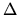
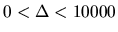
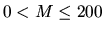
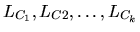
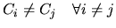
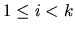

| Least Path Cost |
Given a positive integer  ( ), which is called the overhead, and M ( ) straight line segments in a two-dimensional plane with the following properties:
A path is a sequence of line segments
,
such that k > 1,
,
LCi
intersects with
LC<55>>i+1 for all
,
one endpoint of LC1
does not intersect with any other line segments, and one endpoint of LCk
does not intersect
with any other line segments. The cost between two intersection line segments i
LCi and
LC<59>>i+1 is
That is, for example you can image, the number of stairs that one has to climb (up or
down ) by walking from LCi to
LC<63>>i+1. The cost of a path
is
In the example shown in Fig. 1, = 25, M = 8, and N = 9. Then cost(L2, L3) = 1 and cost(L1, L6 ) = 8. L1, L4, L5 is not a path. There are three paths in the plane. The cost for the path L1, L6, L7, L8 is 109. The cost for the path L1, L4, L5 ,L8 is 131. The cost for the path L2, L3 is 51. Hence L2, L3 is the path with the least cost.
You may also assume there is at least one path in the plane. Write a program to find the least cost among all paths.
Each line segment is represented by three integers, separated by blanks.
Fig. 1: An example of 8 straight lines with 9 endpoints.
2 8 9 25 1 2 1 8 9 10 7 8 9 1 4 2 4 5 20 1 3 9 3 5 9 5 6 8 6 6 21 1 2 1 1 4 2 4 5 20 1 3 9 3 5 9 5 6 8
51 93